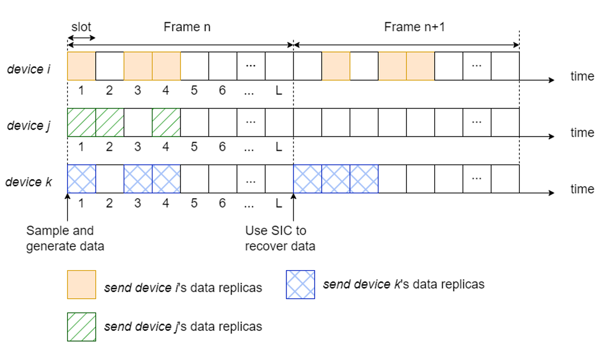
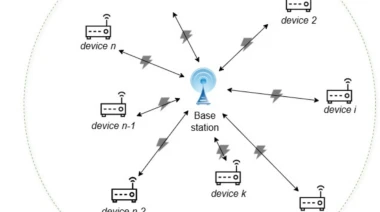
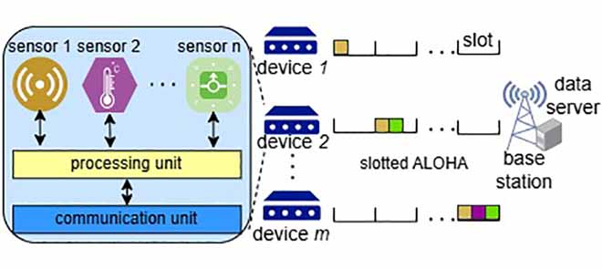

-
Conference Area Chairs
NeurIPS 2025
-
Workshop Organizer
Open-world Visual Perception Workshop @PRCV 2023 [link]Precognition Workshop @CVPR 2023 [link] [CVPR Recording]
-
Journal Reviewer
IEEE Transactions on Pattern Analysis and Machine Intelligence (TPAMI)IEEE Transactions on Image Processing (TIP)Pattern RecognitionArtificial Intelligence Review (AIRE)IEEE Transactions on Intelligent Transportation Systems (ITS)IEEE Transactions on MultimediaIEEE Internet of Things JournalIEEE Transactions on Big DataIEEE Transactions on Medical ImagingIEEE AccessIEEE Transactions on Circuits and Systems for Video Technology (TCSVT)ACM TOMMNeurocomputingNature Scientific ReportsInformation SciencesDefense Technology
-
Conference Reviewer
CVPR/ICCV/WACV/ECCV/ACM MultimediaAAAI/NeurIPS/ICLR/ICRANAACL-HLT SRW 2021ACL 2020 Student Research WorkshopCVPR 2020 AI for Content Creation Workshop
-
Probabilistic data generation based age-critical frameless ALOHA protocol in wireless networks

Show-Shiow Tzeng, Ying-Jen Lin, and Sheng-Wei Wang*Wireless NetworksPacket Error-Aware Threshold ALOHA Protocol in Wireless Networks
Show-Shiow Tzeng, Ying-Jen Lin, and Sheng-Wei Wang,Wireless Personal CommunicationsAge of Information in IoT Devices With Integrated Heterogeneous Sensors Under Slotted ALOHA
Show-Shiow Tzeng, Ying-Jen Lin, and Sheng-Wei Wang,IEEE Sensors Journal[Paper]